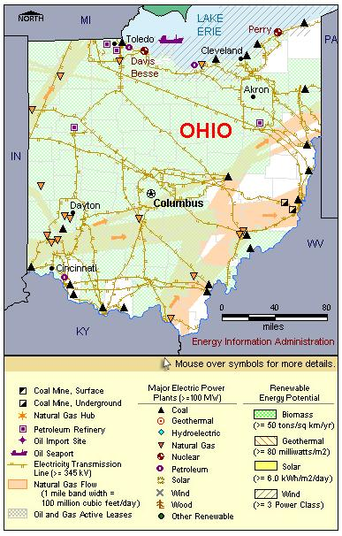

State Overview
There are two operating nuclear power plants in Ohio:
Davis-Besse in Ottawa County
- In 2002, the plant was shut down for a full year following the discovery of deterioration of the reactor head (the upper part of the reactor). The discovery led to enhanced NRC oversight of maintenance at the plant, substantial costs and fines. It also resulted in shutdowns at other plants to inspect for this type of damage. Plant personnel corrected the problems and the reactor returned to service in 2005.
Perry in Lake County
- Construction began on Perry 2, a second BWR, in 1985 but was cancelled in 1994. The uncompleted Perry 2 has furnished parts for the plant's lone operational reactor.
Contribution of Nuclear Power
With a little over 2,000 MW of nuclear capacity, Ohio ranks roughly in the middle of States with nuclear power.
Ohio’s nuclear capacity is around 5% of the State’s total electric generating capacity.
Nuclear generation represents just over 10% of Ohio’s total electric power generation.
Ohio is a net importer of electric power energy, importing 11% of its electric power use.
License Renewals & New Applications
- Davis-Besse: On August 11, 2006, FirstEnergy notified the NRC that it plans to submit a license renewal application for the Davis-Besse plant. The current operating license for Davis-Besse expires in April 2017.
- Perry: On August 11, 2006, FirstEnergy notified the NRC that it plans to submit a license renewal application for the Perry plant. The operating license for Perry expires in March 2026.
Permanently Shutdown Commercial Reactors

|
| Ohio Total Electric Power Industry, Summer Capacity and Net Generation, by Energy Source, 2008 |
| Primary Energy Source |
Summer Capacity
(MW) |
Share of State Total
(Percent) |
Net Generation
(Thousand MWh) |
Share of State Total
(Percent) |
| Nuclear |
2,124 |
6.3 |
17,514 |
11.4 |
| Coal |
21,815 |
65.1 |
130,694 |
85.2 |
| Hydro and Pumped Storage |
101 |
0.3 |
386 |
0.3 |
| Natural Gas |
8,192 |
24.5 |
2,484 |
1.6 |
| Other1 |
100 |
0.3 |
272 |
0.2 |
| Other Renewable1 |
113 |
0.3 |
623 |
0.4 |
| Petroleum |
1,047 |
3.1 |
1,438 |
0.9 |
| Total |
33,492 |
100.0 |
153,412 |
100.0 |
|
|
|
|
|
| Ohio Nuclear Power Plants, Summer Capacity and Net Generation, 2008 |
| Plant Name/Total Reactors |
Summer Capacity
(MW) |
Net Generation
(Thousand MWh) |
Share of State Nuclear
Net Generation
(Percent) |
Owner |
Davis Besse
Unit 1 |
879 |
6,823 |
39.0 |
FirstEnergy Nuclear Operating Company |
Perry
Unit 1 |
1,245 |
10,691 |
61.0 |
FirstEnergy Nuclear Operating Company |
2 Plants
2 Reactors |
2,124 |
17,514 |
100.0 |
|
Plant Profiles
Davis-Besse Nuclear Generating Station
| Davis Besse |
| Unit |
Summer Capacity
(MW) |
Net Generation
(Thousand MWh) |
Summer Capacity Factor
(Percent) |
Type |
Commercial Operation Date |
License Expiration Date |
| 1 |
879 |
6,823 |
88.6 |
PWR |
7/31/1978 |
4/22/2017 |
| |
879 |
6,823 |
88.6 |
|
|
|
Operator: FirstEnergy Corp.
Location and Service Territory: The Davis-Besse power plant is located in Oak Harbor, Ohio, on a site covering 954 acres.
Construction Cost: $2.221 billion (2007 USD)
Reactor Descriptions: The Davis-Besse unit is a Babcock & Wilcox two -loop pressurized water reactor.
Cooling System: Cooling is handled by a natural draft cooling tower supplied by Lake Erie.
Perry Nuclear Power Plant
| Perry |
| Unit |
Summer Capacity
(MW) |
Net Generation
(Thousand MWh) |
Summer Capacity Factor
(Percent) |
Type |
Commercial Operation Date |
License Expiration Date |
| 1 |
1,245 |
10,691 |
98.0 |
BWR |
11/18/1987 |
3/18/2026 |
| |
1,245 |
10,691 |
98.0 |
|
|
|
Operator: FirstEnergy Corp.
Location and Service Territory: The Perry nuclear plant is located on 1,100 acres near Cleveland, Ohio, in Lake County.
Construction Cost: $6.024 billion (2007 USD)
Reactor Description: Perry is a General Electric Type 6 boiling water reactor.
Cooling System: Cooling water is supplied by Lake Erie for its natural draft cooling tower.
see also:
more annual nuclear statistics
projected electricity capacity to 2035
international
electricity statistics |
|